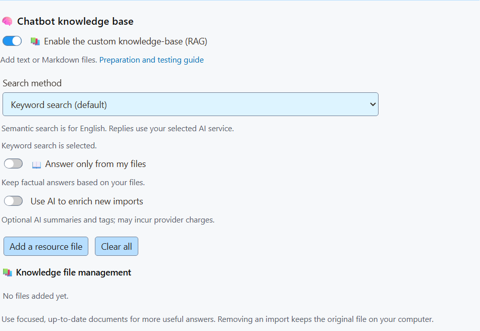

1. Konu odaklı dosyalar hazırla
Planlar, kargo, iadeler veya programlar gibi her konu için küçük bir metin ya da Markdown dosyası kullanın. Adları, fiyatları, tarihleri, koşulları ve istisnaları bir arada tutun.
Açık başlıklar ve eksiksiz bilgiler kullanın. “O” gibi belirsiz ifadeleri ürün veya plan adıyla değiştirin.
# Membership refunds
Monthly membership: $25 USD.
Request a refund within seven days.
Contact: billing@example.invalid.İsteğe bağlı: dosyaları hazırlamak için yapay zekâdan yardım alın
Yetenekli bir yapay zekâdan dağınık kaynakları düzenlemesini isteyin. Taslağı aslıyla karşılaştırın; akıcı bir yanıt bile bir bilgiyi değiştirebilir.
Bu istemi kopyalayın, ardından kaynak içeriğinizi ekleyin:
Organize the source material into short Markdown files, one topic per file.
Keep every name, price, date, URL, condition, and exception exactly.
Use clear headings and complete facts in the source language.
Do not invent answers or silently resolve conflicting facts.
List missing or conflicting facts separately for my review.
Return each filename followed by its contents.Dosyaları kaydetmeden önce tüm fiyatları, süreleri, kısıtlamaları ve bağlantıları kontrol edin.
2. İçe aktar ve yanıt biçimini seç
Chat Bots and AI services → Chat Bot - Primary → Chat bot knowledge bölümünü açın. Bilgi tabanını etkinleştirip dosyalarınızı ekleyin.
İlk içe aktarmada yapay zekâ zenginleştirmesini kapalı bırakın. Bu seçenek, seçili yapay zekâ hizmetiyle özetler ve arama etiketleri ekler; hizmet işlem ücreti alabilir.
İngilizce için anahtar kelime aramasıyla yerel anlamsal aramayı karşılaştırın. Diğer dillerde anahtar kelime aramasıyla başlayın ve izleyicilerinizin dilinde gerçek sorular deneyin. Birlikte gelen anlamsal model İngilizce için tasarlanmıştır.


Bilgi içeren yanıtların bilgi tabanınıza dayanması için “Answer only from my files” seçeneğini açın.
Yanıtı bulunamayan yorumlara da yanıt verilsin mi?
“Do not screen out any of the bot’s replies” açıkken bot selam verebilir, açıklama isteyebilir veya bilgi eksikliğini belirtebilir. Aksi hâlde, yanıtı bulunamayan sorularda sessiz kalabilir.
3. Yayından önce kontrol et
Test sırasında yanıtları yalnızca kaplamaya gönderin. Yanıtını bildiğiniz bir soru sorun, farklı biçimde tekrar sorun, ardından dosyalarda olmayan bir konuyu sorun.
Yanıtları kaynak bilgilerle karşılaştırın. Belirsiz içeriği düzeltin, eski içe aktarımları değiştirin ve aynı soruları tekrarlayın.